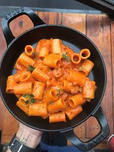
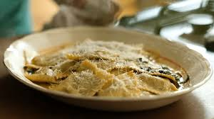
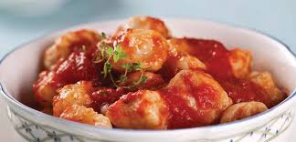
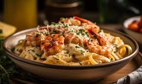

O espaguete à carbonara é um dos pratos mais tradicionais da culinária romana e carrega uma história
curiosa.
Sua receita original é extremamente simples, composta basicamente por ovos, queijo pecorino ou parmesão,
guanciale e
pimenta-do-reino.
Ingredientes:
300 g de espaguete
150 g de pancetta ou bacon
2 ovos + 1 gema
50 g de parmesão ralado
Pimenta-do-reino
Sal
Modo de preparo:
Cozinhe o espaguete.
Doure a pancetta.
Misture ovos, gema e parmesão em uma tigela.
Adicione o macarrão quente, desligue o fogo e mexa até formar o creme.
Finalize com pimenta.
Fettuccine Alfredo
O Fettuccine Alfredo é uma das massas mais cremosas e conhecidas do mundo. Criado em Roma por Alfredo di
Lelio, o
prato originalmente levava apenas manteiga e parmesão, mas se popularizou internacionalmente.
Ingredientes:
300 g de fettuccine
2 colheres de manteiga
200 ml de creme de leite
50 g de parmesão
Sal e pimenta
Modo de preparo:
Cozinhe o fettuccine.
Derreta a manteiga, adicione creme de leite e parmesão.
Misture a massa ao molho.
Finalize com pimenta.
Lasanha à Bolonhesa
A lasanha à bolonhesa é um ícone da culinária italiana e símbolo de fartura. Combina perfeitamente massa,
carne, molho de tomate e
muito queijo em camadas generosas. É o tipo de prato que reúne a família e transforma qualquer almoço em
evento especial.
Ingredientes:
Massa de lasanha
400 g de carne moída
Cebola e alho
Molho de tomate
Muçarela e parmesão
Sal e orégano
Modo de preparo:
Refogue a carne com cebola e alho.
Misture o molho e tempere.
Monte as camadas alternando massa, molho e queijo.
Asse por 30–40 minutos.

Penne ao Molho de Vodka
O penne ao molho de vodka é um prato sofisticado e surpreendentemente simples. A vodka realça os sabores do
tomate e equilibra a
acidez, criando um molho rosado aveludado e intenso.
Ingredientes:
300 g de penne
Cebola picada
1 xícara de molho de tomate
½ xícara de creme de leite
¼ xícara de vodka
Azeite, sal e pimenta
Modo de preparo:
Refogue a cebola.
Adicione a vodka e deixe evaporar.
Junte molho de tomate e creme de leite.
Misture o penne cozido.

Ravioli de Ricota com Manteiga e Sálvia
Este prato é um clássico do norte da Itália, conhecido pela simplicidade elegante. O ravioli recheado de
ricota já é suave e
delicado, mas quando combinado ao molho de manteiga dourada com sálvia, ganha um perfume e um sabor
irresistíveis.
Ingredientes:
300 g de ravioli de ricota
Manteiga
Folhas de sálvia
Parmesão
Sal
Modo de preparo:
Cozinhe o ravioli.
Derreta a manteiga com sálvia até dourar.
Misture tudo delicadamente.
Macarrão ao Pesto
Originário de Gênova, o pesto é um dos molhos mais frescos e aromáticos da culinária italiana. Feito
tradicionalmente com
manjericão, azeite, pinoli e parmesão, ele traz uma explosão de sabor herbal
Ingredientes:
300 g de massa curta
Manjericão fresco
Parmesão
Azeite
Pinoli ou castanha
Alho e sal
Modo de preparo:
Bata todos os ingredientes até formar uma pasta.
Misture com o macarrão cozido.
Finalize com parmesão.

Nhoque de Batata ao Sugo
O nhoque é um prato que muitos associam à comida caseira, feita com carinho. Leve e macio quando preparado
corretamente,
ele absorve perfeitamente o molho de tomate fresco e perfumado.
Ingredientes:
800 g de batata
1 ovo
Farinha
Molho de tomate
Sal
Modo de preparo:
Cozinhe e amasse as batatas.
Misture ovo e farinha até formar a massa.
Modele, corte e cozinhe.
Cubra com o molho quente.

Talharim com Molho de Camarão
Esse prato une o frescor do mar com a suavidade de um molho cremoso. O camarão, quando bem temperado e
rapidamente salteado,
mantém sua maciez e sabor característico.
Ingredientes:
300 g de talharim
300 g de camarão
Manteiga
Creme de leite
Alho
Sal, pimenta e páprica
Modo de preparo:
Salteie o camarão e reserve.
Prepare o molho com manteiga, alho e creme.
Misture o talharim e finalize com os camarões.
Penne à Putanesca
A putanesca é uma receita vibrante e cheia de personalidade. Criada em Nápoles, leva ingredientes fortes
como anchovas,
alcaparras e azeitonas, resultando em um molho salgado, aromático e muito saboroso.
Ingredientes:
300 g de penne
Alho
Anchovas
Tomate pelado
Alcaparras
Azeitonas
Azeite e pimenta
Modo de preparo:
Refogue alho e anchovas no azeite.
Adicione tomate, alcaparras e azeitonas.
Misture o penne cozido e sirva quente.